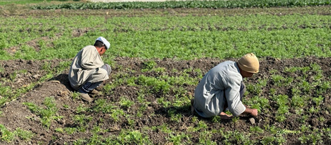
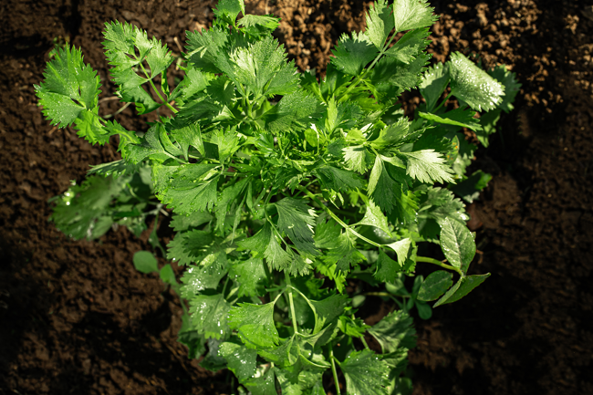
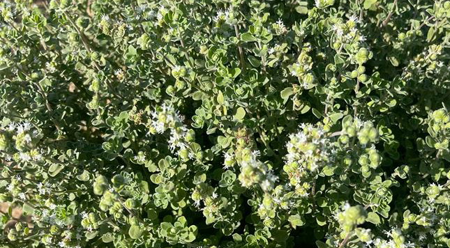
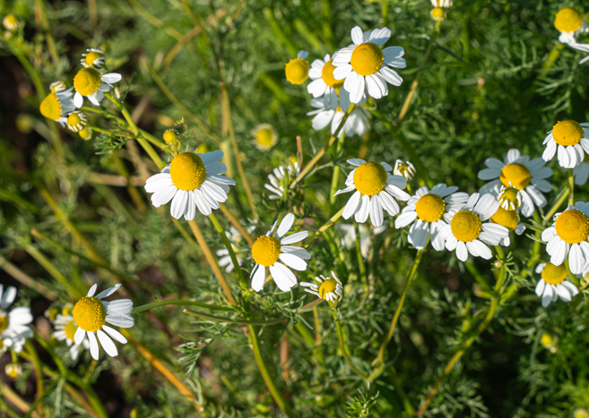
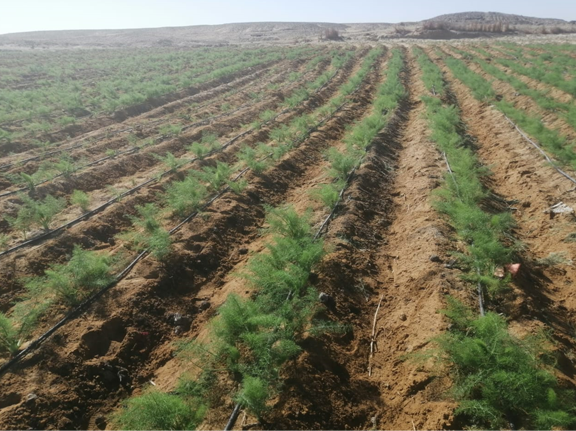

Our Land
Our vast organic farms span Egypt's most fertile governorates — from the ancient Nile floodplains of Fayoum and Beni Suef, to the Upper Egyptian fields of Al Minia, Assuit and Luxor, and the newly reclaimed desert lands of Al Wahat. Each farm is cultivated with a deep respect for the soil, the seasons, and the communities who work the land — combining traditional Egyptian flood irrigation with modern organic farming methods.
Where We Grow

Established 2005
Fayoum Governorate · Northern Egypt
Fayoum farms were the foundation of everything we have built. Some land came through inheritance, the rest carefully acquired. Now covering 195 hectares across 4 farms, all run under our direct supervision with traditional flood irrigation from the Fayoum Depression's natural waterways.

Established 2008
Somsta & Ahnesia · Beni Suef Governorate
213 hectares distributed across 9 farms in Beni Suef, all managed under our direct supervision. The farms sit on traditional fertile Nile floodplain land, irrigated directly from the river — yielding exceptional productivity with no risk of cross-contamination.

Established 2018
Al Minia Governorate · Upper Egypt
Reclaimed desert virgin area established in 2018. We manage and cultivate over 100 hectares of medicinal herbs & spices using modern farming methods, with mechanical harvesting. The area has great potential to reach 200 hectares of botanical products within a short period.

Established 2010
Assuit Governorate · Upper Egypt
84 hectares of traditional fertile Nile floodplain land, all managed under our supervision. The direct Nile flood irrigation provides exceptional soil nutrition and yields premium quality herbs and seed crops in one of Egypt's most productive agricultural regions.
Established 2020
Athna · Luxor Governorate · Upper Egypt
Our farm in Luxor is located in Athna — a reclaimed desert area where we used flood irrigation to bring approximately 60 hectares of new land into production. The warm Upper Egyptian climate is ideal for growing Hibiscus, producing exceptional colour and flavour.

Established 2023
Wadi El Natrun · Wahat Al Bahria · Giza
Our newest farm in Wahat Al Bahria, Giza is a newly reclaimed desert on pristine virgin soil. Using modern drip irrigation, we cultivate approximately 50 hectares of diverse crops. The area has exceptional potential to reach 420 hectares of botanical products within a short period — our most ambitious expansion to date.
What Makes Us Different
Egypt's agricultural land is among the most fertile on earth. Millennia of annual Nile flooding have deposited rich alluvial soil that requires no synthetic fertilisation. We honour this gift by farming in harmony with the land — combining ancestral knowledge with modern organic certification.